Konzept 1 · Spiegel, Varianten
Normal für helle Flächen, invertiert für dunkle Flächen. Das Favicon schaltet im Browser automatisch nach Theme um und hat für 16 px dickere Linien und eine gröbere Schraffur.
Auf hell
mark-light-bg.svg
 96
96Auf dunkel
mark-dark-bg.svg

9632
freebusy-sync
Favicon
favicon.svg, links wie im hellen, rechts wie im dunklen Browser
32
16
Accounts ·
freebusy-sync
Accounts · freebusy-sync
Einfarbig
mark-mono.svg, nimmt die Textfarbe an (README, Druck, Sticker)
Hinweis: als img ohne Farbe, siehe unten
Die Vorschau zeigt die beiden Favicon-Zustände als feste Dateien, weil dein Mac im Dark Mode
läuft und das automatische Favicon hier sonst immer dunkel wäre. Einfarbig nutzt
currentColor; als <img> eingebunden wird es schwarz, inline im HTML
übernimmt es die Textfarbe.